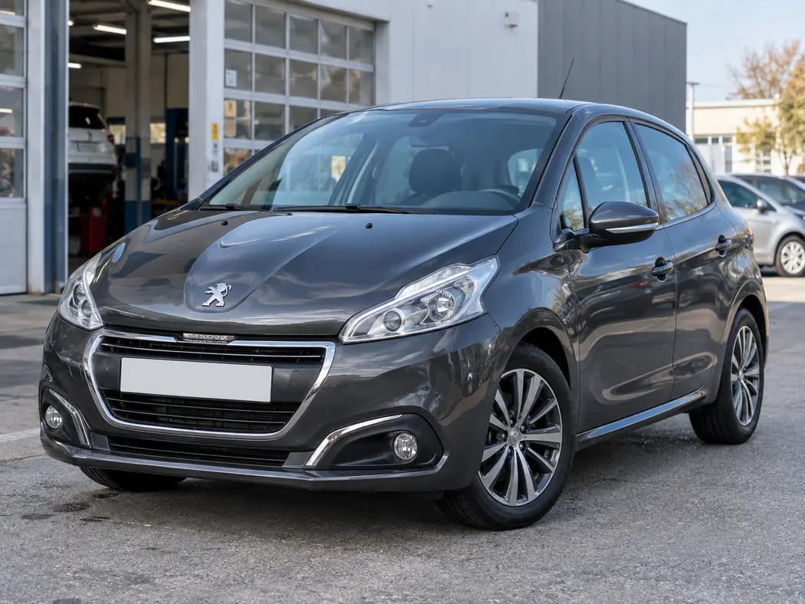

ΕΠΙΛΕΞΕ ΤΟ ΕΠΟΜΕΝΟ ΒΗΜΑ
DIAGNOSTIC CASE / ΑΠΟΣΤΟΛΗ 04Μπες στο συνεργείο.
Μπες στο συνεργείο.
Βρες την αιτία.
Ένας πίσω αισθητήρας φαίνεται να δυσλειτουργεί μετά από βροχή. Ακολούθησε πραγματική διαγνωστική λογική: παραλαβή, έλεγχος συστήματος, live data, επιθεώρηση φίσας και επαλήθευση επισκευής. Ξεχωριστή αποστολή από τη Βάρδια 25 περιστατικών.

Peugeot 208 (2016) · Διακοπτόμενη λειτουργία πίσω αισθητήρων
Έξι απαιτητικά στάδια: παρατήρηση, επιλογή κατάλληλου διαγνωστικού, ανάλυση ευρημάτων, φυσικός έλεγχος, επισκευή επαφής και τελική επαλήθευση. Η βλάβη και οι ενδείξεις είναι υποθετικές.
Εκτιμώμενη διάρκεια: 12–18 λεπτά. Το μοντέλο Peugeot 208 είναι πραγματικό, αλλά οι εικονιζόμενες σκηνές, τα δεδομένα του διαγνωστικού, τα συμπτώματα και η βλάβη είναι εκπαιδευτικές αναπαραστάσεις. Οι εικόνες βρίσκονται τοπικά στον φάκελο assets/images. Εγχειρίδιο Peugeot 208 · Parking sensors ↗
Όλα τα ευρήματα είναι υποθετικά. Δεν μετράμε αντίσταση σε ενεργοποιημένο κύκλωμα και δεν αποσυνδέουμε/τρυπάμε αγωγούς χωρίς προδιαγεγραμμένη διαδικασία. Κατά τον έλεγχο με όπισθεν διασφαλίζουμε ακινησία, επαρκή χώρο και προστασία ανθρώπων. Ο αισθητήρας δεν αντικαθιστά τον έλεγχο του οδηγού.